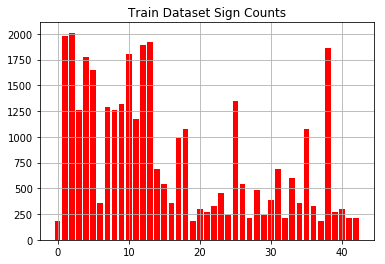
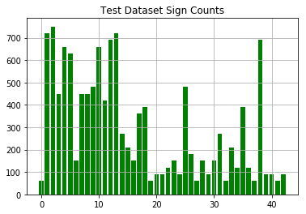
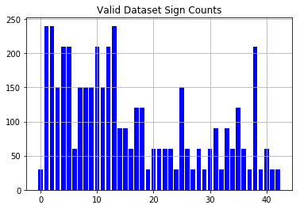
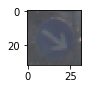
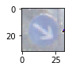
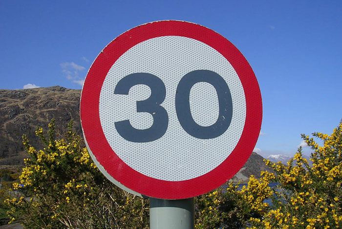
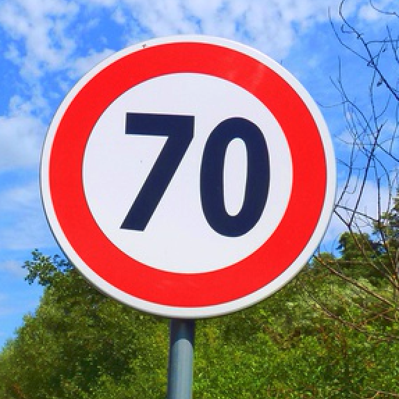
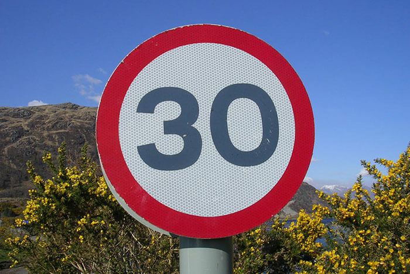
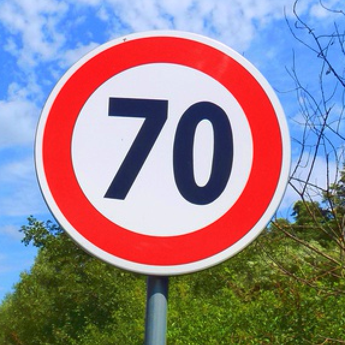

Traffic Sign Recognition
Build a Traffic Sign Recognition Project
The goals / steps of this project are the following:
- Load the data set (see below for links to the project data set)
- Explore, summarize and visualize the data set
- Design, train and test a model architecture
- Use the model to make predictions on new images
- Analyze the softmax probabilities of the new images
- Summarize the results with a written report
Rubric Points
Here I will consider the rubric points individually and describe how I addressed each point in my implementation.
Writeup / README
1. Provide a Writeup / README that includes all the rubric points and how you addressed each one. You can submit your writeup as markdown or pdf. You can use this template as a guide for writing the report. The submission includes the project code.
You're reading it! and here is a link to my project code
Data Set Summary & Exploration
1. Provide a basic summary of the data set. In the code, the analysis should be done using python, numpy and/or pandas methods rather than hardcoding results manually.
I used the pandas library to calculate summary statistics of the traffic signs data set:
- The size of training set is 34799
- The size of the validation set is 4410
- The size of test set is 12630
- The shape of a traffic sign image is (32, 32, 3)
- The number of unique classes/labels in the data set is 43
2. Include an exploratory visualization of the dataset.
Here is an exploratory visualization of the data set.
  
Design and Test a Model Architecture
1. Describe how you preprocessed the image data. What techniques were chosen and why did you choose these techniques? Consider including images showing the output of each preprocessing technique. Pre-processing refers to techniques such as converting to grayscale, normalization, etc. (OPTIONAL: As described in the "Stand Out Suggestions" part of the rubric, if you generated additional data for training, describe why you decided to generate additional data, how you generated the data, and provide example images of the additional data. Then describe the characteristics of the augmented training set like number of images in the set, number of images for each class, etc.)
As a first step, I normalized the images to be between -1 and 1, centered around 0. This makes data has mean zero and equal variance. I didn't convert the data to grayscale because I think converting to grayscale will loose information of data, such as the color of stop sign.
Here is an example of a traffic sign image before and after normalization.

But I investigated other techniques to pre-process data:
- RGB to YUV: from Pierre Sermanet's paper, I will convert pics from RGB to YUV and choose only the Y channel. The Y channel is then preprocessed with global and local contrast normalization while U and V channels are left unchanged.
- Moving sign to different location of the whole picture: this method can eliminate the effect of the different location of traffic sign in the picture.
- Rotation: duplicating, rotating n degrees, and then appending an image (for every image and many different n degrees per image) can significantly grow the training database. Without having to collect more images, this adds data that relates to real life scenarios, as signs, for example, can be rotated at any angle. This will allow the model to recognize new images even if they are rotated.
2. Describe what your final model architecture looks like including model type, layers, layer sizes, connectivity, etc.) Consider including a diagram and/or table describing the final model.
My final model consisted of the following layers:
| Layer | Description |
|---|---|
| Input | 32x32x3 RGB image |
| Convolution 5x5 | 1x1 stride, same padding, outputs 28x28x6 |
| RELU | |
| Max pooling | 2x2 stride, outputs 14x14x6 |
| Convolution 5x5 | 1x1 stride, same padding, outputs 10x10x16 |
| RELU | |
| Max pooling | 2x2 stride, outputs 5x5x16 |
| Flatten | outputs 400 |
| Fully connected | outputs 120 |
| RELU | |
| Fully connected | outputs 84 |
| RELU | |
| Fully connected | outputs 43 |
| Softmax | |
| Loss | |
| Adam Optimizer |
3. Describe how you trained your model. The discussion can include the type of optimizer, the batch size, number of epochs and any hyperparameters such as learning rate.
To train the model, I used an AdamOptimizer as the previous LeNet project does. One of the tricky part is choosing the batch size and number of epochs. I tried with different numbers. I started with batch_size(128) and epochs(30). I was able to get relatively good accuracies (>90%) but not good enough. But when I tried to get better result, I tried batch_size(128) and epochs(30) but it seems like the accuracy was stable after some iterations. So I thinkt increasing the epochs won't really work.
Also, I know that smaller batch_size is better because it's more diverse. So I picked batch_size(32) and epochs(30) and the result is very good.
4. Describe the approach taken for finding a solution and getting the validation set accuracy to be at least 0.93. Include in the discussion the results on the training, validation and test sets and where in the code these were calculated. Your approach may have been an iterative process, in which case, outline the steps you took to get to the final solution and why you chose those steps. Perhaps your solution involved an already well known implementation or architecture. In this case, discuss why you think the architecture is suitable for the current problem.
I started with learning_rate(0.001). And I dynamically adjusted the learning rate based on the accuracy of the previous iteration. For instance, if the previous accuracy was above 0.88, the learning rate would change to 0.0009. The larger the previous accuracy is, the smaller the learning rate is. And when I reach the goal of the accuracy, I will stop trainning and use the last(best so far) one for the final model
My final model results were:
- validation set accuracy of 0.95
- test set accuracy of 0.93
If an iterative approach was chosen:
What was the first architecture that was tried and why was it chosen?
I used LeNet architecture because I've learnt about it. And it works fine.
What were some problems with the initial architecture?
Not really, but one thing I forgot is to use integer as variable to pre-process data, which caused a little bit inaccuracy.
How was the architecture adjusted and why was it adjusted? Typical adjustments could include choosing a different model architecture, adding or taking away layers (pooling, dropout, convolution, etc), using an activation function or changing the activation function. One common justification for adjusting an architecture would be due to overfitting or underfitting. A high accuracy on the training set but low accuracy on the validation set indicates over fitting; a low accuracy on both sets indicates under fitting.
I didn't try changing the architecture becasuce what the initial one works fine.
Which parameters were tuned? How were they adjusted and why?
learning rate, batch size, and number of epochs. My reasoning is described above in #3 and #4.
What are some of the important design choices and why were they chosen? For example, why might a convolution layer work well with this problem? How might a dropout layer help with creating a successful model?
Convolution layer is good for image recognition because all images are different. Convolution can help with that by adjusting the shape of the input to normalize the image. Dropout can improve the model because it will ensure that the model does not "memorize" the training data. It will be successful for the training data, but also generic enough to be able to work on any other future input it is given, even if it is new data.
If a well known architecture was chosen:
What architecture was chosen?
LeNet architecture
Why did you believe it would be relevant to the traffic sign application?
LeNet works well for images recognition and classification.
How does the final model's accuracy on the training, validation and test set provide evidence that the model is working well?
If it works well both on the training set and test set. If we see the model works well for the training set but not the test set, then it means the model has "memorize" the training data. In this case, we would need to add dropout layers.
Test a Model on New Images
1. Choose five German traffic signs found on the web and provide them in the report. For each image, discuss what quality or qualities might be difficult to classify.
Here are five German traffic signs that I found on the web:
 



2. Discuss the model's predictions on these new traffic signs and compare the results to predicting on the test set. At a minimum, discuss what the predictions were, the accuracy on these new predictions, and compare the accuracy to the accuracy on the test set (OPTIONAL: Discuss the results in more detail as described in the "Stand Out Suggestions" part of the rubric).
Here are the results of the prediction:
| Image | Prediction |
|---|---|
| Right-of-way | Right-of-way at the next intersection |
| Slippery Road | Slippery road |
| 30 km/h | Speed limit (80km/h) |
| 70 km/h | Speed limit (70km/h) |
| Stop sign | Stop |
The model was able to correctly guess 4 of the 5 traffic signs, which gives an accuracy of 80%. This compares favorably to the accuracy on the test set of 0.93 :-(
3. Describe how certain the model is when predicting on each of the five new images by looking at the softmax probabilities for each prediction. Provide the top 5 softmax probabilities for each image along with the sign type of each probability. (OPTIONAL: as described in the "Stand Out Suggestions" part of the rubric, visualizations can also be provided such as bar charts)
For the first image(Right-of-way.jpg), the model is relatively sure that this is a Right-of-way at the next intersection (probability of 100.00%). The top five soft max probabilities were
| Probability | Prediction |
|---|---|
| 1.00 | Right-of-way at the next intersection |
| .00 | Priority road |
| .00 | Dangerous curve to the left |
| .00 | Pedestrians |
| .00 | End of no passing |
The other results are shown as below:
Pic: Slippery_Road.jpg
| Probability | Prediction |
|---|---|
| 1.00 | Slippery road |
| .00 | Pedestrians |
| .00 | Road narrows on the right |
| .00 | Dangerous curve to the right |
| .00 | Beware of ice/snow |
Pic: Speed_Limit_30.jpg
| Probability | Prediction |
|---|---|
| 0.9999 | Speed limit (80km/h) |
| .0001 | Speed limit (30km/h) |
| .00 | Pedestrians |
| .00 | Speed limit (60km/h) |
| .00 | General caution |
Pic: Speed_Limit_70.jpg
| Probability | Prediction |
|---|---|
| 0.9582 | Speed limit (70km/h) |
| .0417 | Speed limit (50km/h) |
| .0001 | Speed limit (30km/h) |
| .00 | Speed limit (60km/h) |
| .00 | Speed limit (20km/h) |
Pic: Stop_Sign.jpg
| Probability | Prediction |
|---|---|
| 1.00 | Stop |
| .00 | Pedestrians |
| .00 | Speed limit (80km/h) |
| .00 | No entry |
| .00 | Speed limit (30km/h) |
(Optional) Visualizing the Neural Network (See Step 4 of the Ipython notebook for more details)
1. Discuss the visual output of your trained network's feature maps. What characteristics did the neural network use to make classifications?